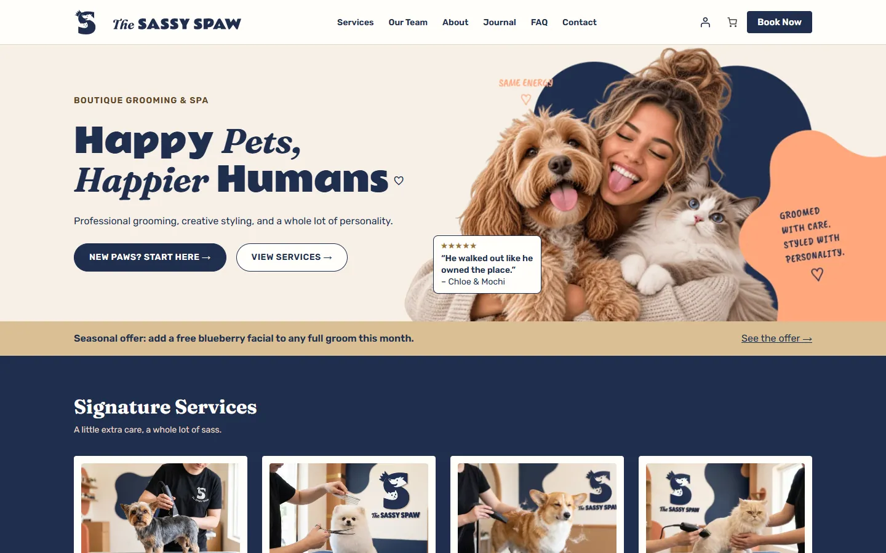
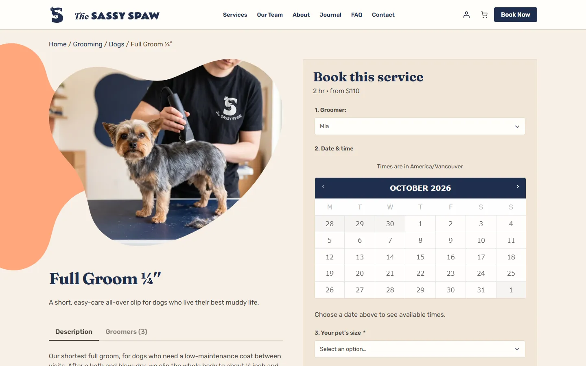
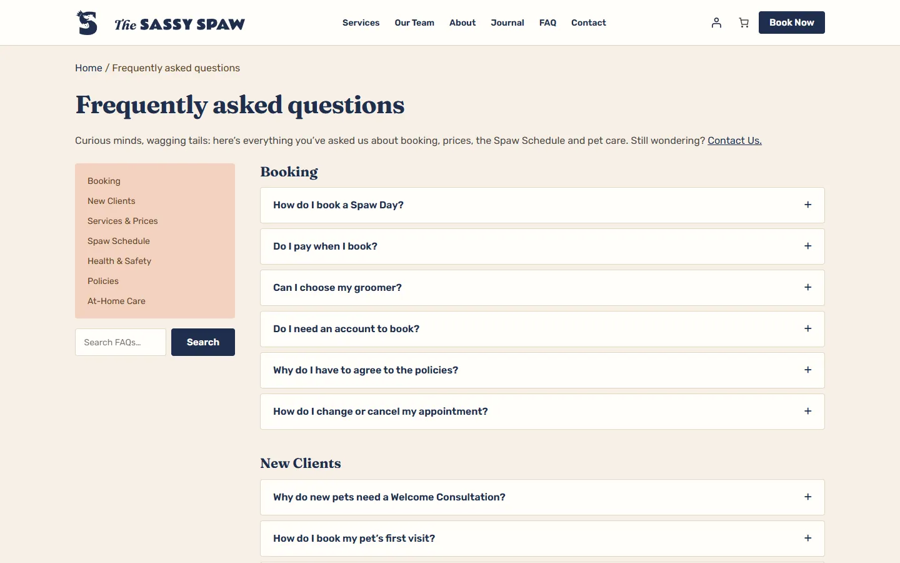
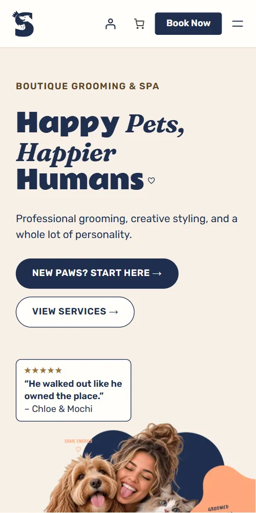

Team Project · WooCommerce Site
The Sassy Spaw
A booking-first website for a one-pet-at-a-time grooming salon in Richmond, BC, built around its promise: "Humanity over vanity."
- Team
- Talia, Frances, Sara & Jake
- My role
- Project management, content, SEO, client tutorial
- Built with
- WordPress, WooCommerce, ACF, Yoast SEO
- Live at
- sassyspaw.bcitwebdeveloper.ca

Overview
The Sassy Spaw is a boutique grooming salon in Richmond, BC that grooms one pet at a time. Its promise is "Humanity over vanity": a calm, unrushed groom matters more than a perfect coat.
The site had one goal: get a new client to book online, then bring them back on the Spaw Schedule, the salon's prepaid plan for regular grooms. We built it as a team of four on WordPress and WooCommerce, with every service set up as a bookable product.
What I did
- Project management: kept four people and four areas of work (design, templates, booking and content) organised and on schedule.
- Content: the site's copy, written in the salon's warm, slightly sassy voice while staying clear about services, prices and policies.
- SEO: local-search page titles like "Pet Grooming in Richmond, BC", a unique meta description on every page, and Yoast SEO for canonical URLs, link previews, breadcrumbs and the XML sitemap.
- Client tutorial: a guide that shows the client how to keep the site up to date on their own.


Inside the site
-
Booking
Each groom is a WooCommerce product: choose a groomer, date and time, your pet's size and add-ons, then pay a 50% deposit.
-
Welcome Consultation
Free, and required for every new pet, so they meet their groomer before the first groom.
-
Spaw Schedule
A prepaid plan every 4, 6 or 8 weeks that saves on each visit. Members rebook with their Spaw Day code.
-
Our Team
Profiles for five groomers, each with their own specialty, and you can pick your favourite when you book.
-
FAQ & policies
Answers grouped from booking to at-home care, with search, plus policies every client agrees to when booking.
-
Journal
Pet-care posts, like why matted pets get shaved and paw care in rainy Vancouver winters.
How we worked
Each of us owned one part of the site:
- Frances led the design and front-end.
- Sara built the templates, ACF blocks and client profiles.
- Jake set up WooCommerce and the booking system.
- I managed the project and handled the content, SEO and client tutorial.

What I learned
Managing a team of four showed me that most of the work happens between the tasks. Design, templates, booking and content all moved at the same time, so the hand-offs mattered as much as the parts themselves.
Doing the content and the SEO together changed how I write. Every page title and description had to say what the page is and where the salon is, in a few words, and still sound like The Sassy Spaw.
Writing the client tutorial was a good test of the whole site. When a step was hard to explain, it usually meant the editing experience could be simpler.